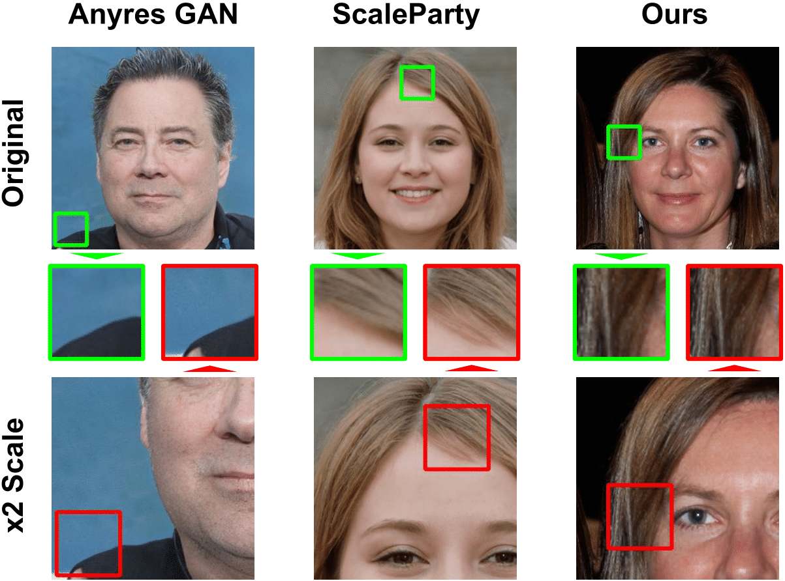

Efficient Scale-Invariant Generator with Column-Row Entangled Pixel Synthesis
Thuan Hoang Nguyen
Thanh Van Le
Anh Tran
VinAI Research
IEEE / CVF Computer Vision and Pattern Recognition Conference 2023
[Paper]
[Code]
[Bibtex]
Skip to:
[Abstract]
[Summary]
[Random Samples]
[Supplementary Video]

Abstract:
Any-scale image synthesis offers an efficient and scalable solution to synthesize photo-realistic images at any scale, even going beyond 2K resolution. However, existing GAN-based solutions depend excessively on convolutions and a hierarchical architecture, which introduce inconsistency and the "texture sticking" issue when scaling the output resolution. From another perspective, INR-based generators are scale-equivariant by design, but their huge memory footprint and slow inference hinder these networks from being adopted in large-scale or real-time systems. In this work, we propose Column-Row Entangled Pixel Synthesis (CREPS), a new generative model that is both efficient and scale-equivariant without using any spatial convolutions or coarse-to-fine design. To save memory footprint and make the system scalable, we employ a novel bi-line representation that decomposes layer-wise feature maps into separate "thick" column and row encodings. Experiments on various datasets, including FFHQ, LSUN-Church, MetFaces, and Flickr-Scenery, confirm CREPS' ability to synthesize scale-consistent and alias-free images at any arbitrary resolution with proper training and inference speed.
Summary
The typical architecture for unconditional image synthesis utilizes a coarse-to-fine design with 3x3 convolution and upsampling layers, which opts for image quality and sacrifices geometric invariance, especially scaling. Furthermore, they treat image generation as a fixed-size synthesis task.

Whereas, we treat an image as a continuous 2D surface, where real images and synthesized samples correspond to discretizations of this surface. We further decompose 2d grid into what we call a "bi-line" representation and opt for INR-based design instead of coarse-to-fine one. Our method is strongly consistent and efficient by design, while maintain a high quality of the output.

By setting the coordinate grid appropriately, our generator is capable of synthesizing with various geometric configurations such as translation, zooming in/out, rotation or distortion.
Comparison of CREPS high-resolution image synthesis with Lanzcos upsampling on FFHQ. As can be seen, CREPS outperforms traditional upsampling methods despite not being trained on super-resolution task.

Acknowledgements:
We thank Lucy Chai, Michaël Gharbi, Eli Shechtman, Phillip Isola, and Richard Zhang for the work of Anyres GAN and its template 😀. Also, we are heavily inspired by the work of CIPS from Ivan Anokhin, Kirill Demochkin, Taras Khakhulin, Gleb Sterkin, Victor Lempitsky, and Denis Korzhenkov.